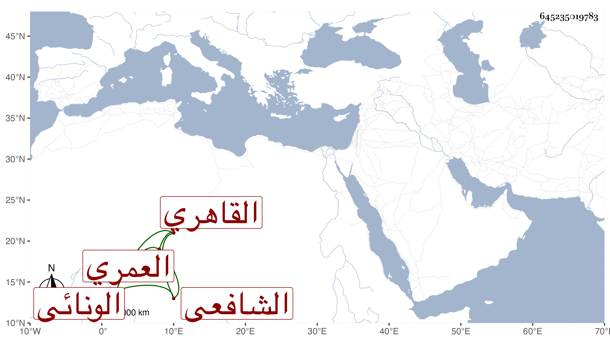

0902Sakhawi.DawLamic.ITO20230111-ara1.EIS1600.645235019783
Biography ID: 645235019783
145
محمد بن محمد إسماعيل بن محمد بن أحمد بن يوسف البدر بن الشمس العمري الونائي الاصل القاهري الشافعي سبط النور التلواني والماضي أبوه . ولد في ليلة الجمعة ثاني رمضان سنة تسع وعشرين وثمانمائة ونشأ فحفظ القرآن وصلى به في جامع الاقمر وممن حضر ختمه شيخنا وروى عنه فوق المنبر حديثا وحفظ الاهتمام والتنبيه وتصحيحه للاسنوي وجمع الجوامع وألفية الحديث والنحو وعرض على غير واحد كشيخنا بل قرأ عليه ألفية الحديث والقاياتي والعلم البلقيني والمحلي والسعد بن الديري والعيني والبدر بن التنسي وعبادة وابن الهمام والعز عبد السلام البغدادي والمحب البغدادي ، واشتغل على أبيه ، وبعده تشاغل بالزراعة والمعاملات في ذلك وفي غيره ، وتمول جدا خصوصا حين اختلاطه بتمربغا وتمراز ، وصار مشارا اليه بحيث ان الاشرف قايتباي أخذ منه نحو عشرة آلاف دينار وأكثر ، وهو على الهمة محب في الاطعام .
